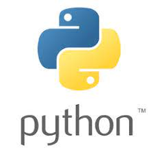

HTML es un lenguaje de marcado que se utiliza para el desarrollo de páginas de Internet. Se trata de la siglas que corresponden a HyperText Markup Language, es decir, Lenguaje de Marcas de Hipertexto

CSS son las siglas en inglés para «hojas de estilo en cascada» (cascading style sheets). Básicamente, es un lenguaje que maneja el diseño y presentación de las páginas web, es decir, cómo lucen cuando un visitante las visita. Funciona junto al lenguaje HTML, que se encarga del contenido básico de las páginas.

JavaScript es el único lenguaje de programación que funciona en los navegadores de forma nativa (lenguaje interpretado sin necesidad de compilación). Por tanto se utiliza como complemento de HTML y CSS para crear páginas webs.

Es un lenguaje de scripting independiente de plataforma y orientado a objetos, preparado para realizar cualquier tipo de programa, desde aplicaciones Windows a servidores de red o incluso, páginas web. Es un lenguaje interpretado, lo que significa que no se necesita compilar el código fuente para poder ejecutarlo, lo que ofrece ventajas como la rapidez de desarrollo e inconvenientes como una menor velocidad.
Es un editor de código fuente desarrollado por Microsoft para Windows, Linux y macOS. Incluye soporte para la depuración, control integrado de Git, resaltado de sintaxis, finalización inteligente de código, fragmentos y refactorización de código. También es personalizable, por lo que los usuarios pueden cambiar el tema del editor, los atajos de teclado y las preferencias. Es gratuito y de código abierto, aunque la descarga oficial está bajo software privativo e incluye características personalizadas por Microsoft.

| Editor de Código | Visual Studio Code |
|---|---|
| Hoja de estilo | CSS |